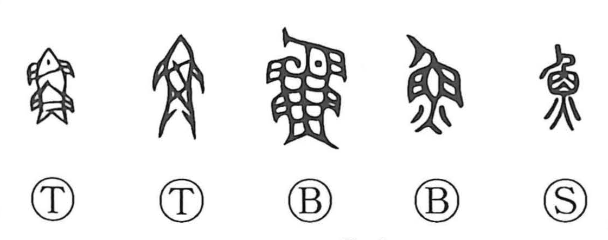

魚

Kun: sakana, uo | On: gyo, go
fish
Explanation
This character is a direct pictograph of a fish seen from above. The four dot-like strokes at the bottom, which later came to resemble the “fire” component, originally depict the spread of the fish’s tail. Because fish inhabit the depths, they were regarded as spiritual beings. The poem Fish among the Pondweed in the Book of Odes celebrates presenting fish in reverent offerings at ancestral mausoleums, and in the tenth century BCE the Zhou king is described rowing on the lake at Piyong to catch fish for such rites. In early thought, fish could even be likened to women, as they were believed to embody yin, the feminine principle.